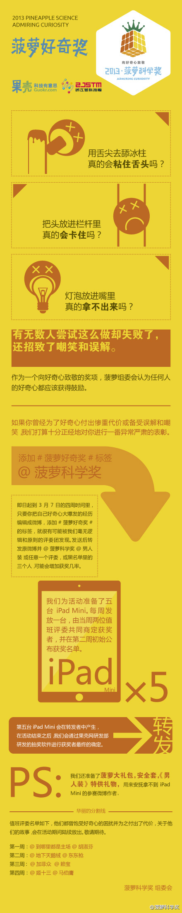
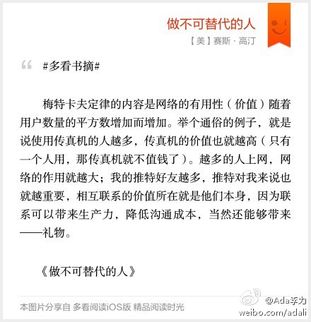

这个好玩。看看那些参赛的段子就很有意思。@菠萝科学奖:好奇心到底有什么用？探索未知世界？推动人类进步或者害死一只猫？好了好了，我们聊点实际的事吧，如果我告诉你，这一个月你可能单凭好奇心就换回一部iPad mini，你会不会很好奇？OK，自取方法请看长微博。#菠萝好奇奖# 
#多看书摘# 梅特卡夫定律的内容是网络的有用性（价值）随着用户数量的平方数增加而增加。举个通俗的例子，就是说使用传真机的人越多，传真机的价值也就越高（只有一个人用，那传真机就不值钱了）。越多的人上网，网络的作用就越大；我的推特好友越多，推特对我来说也就越重… 网页链接 
 网页链接
网页链接